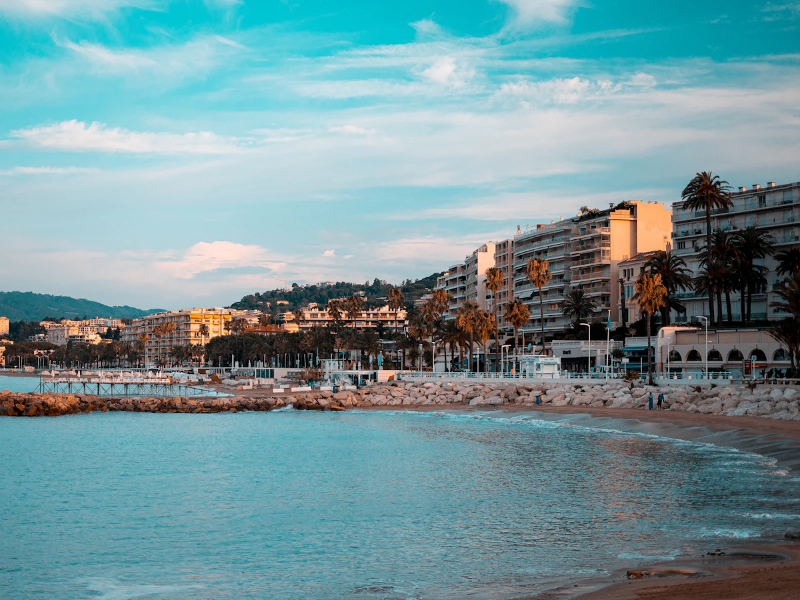
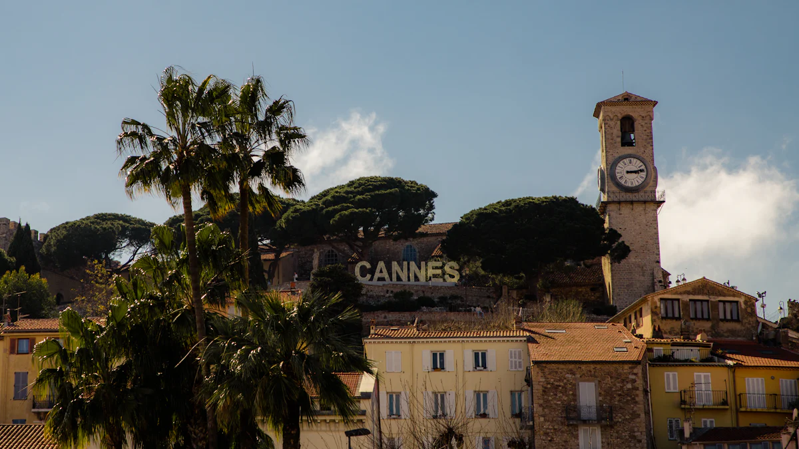
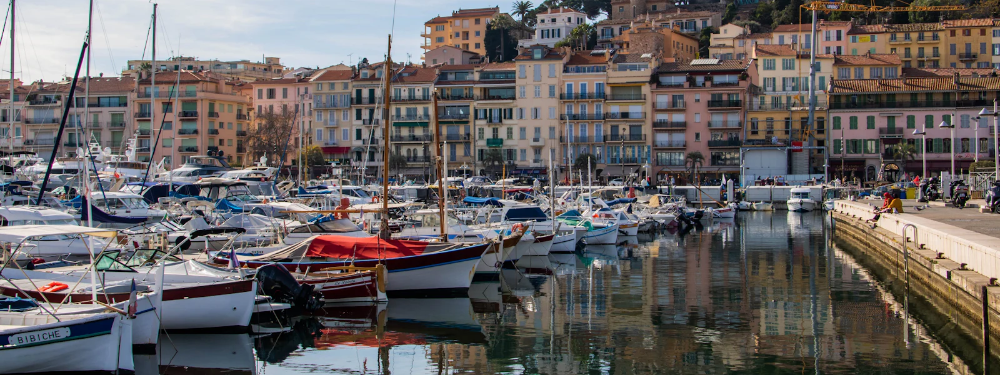
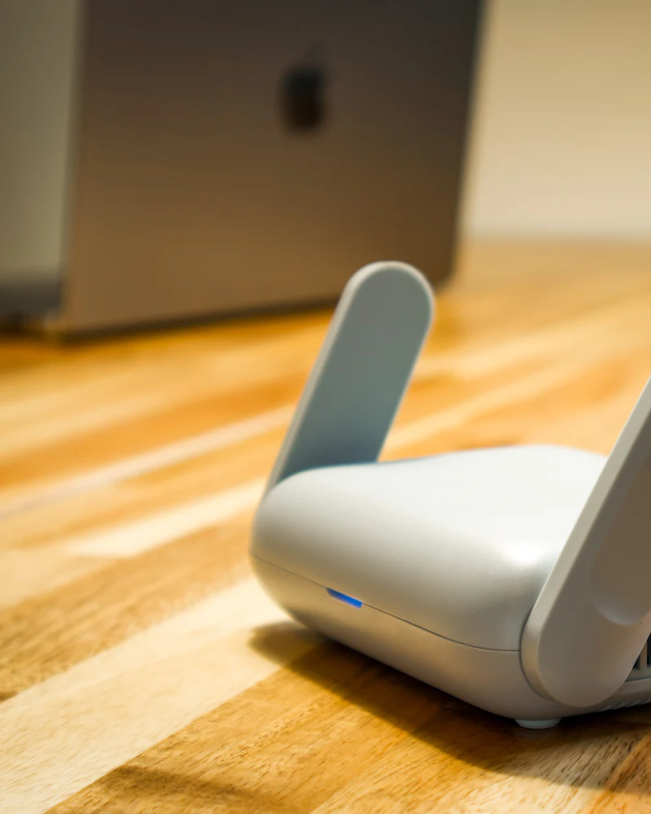

Dépannage et assistance informatique à Cannes
De la Croisette à La Bocca, du Suquet à Californie, nous accompagnons les particuliers, les commerçants et les professionnels cannois pour que leur informatique ne les lâche jamais au mauvais moment.

Un partenaire informatique pour les professionnels cannois
À Cannes, l'activité suit le rythme des congrès, festivals et saisons touristiques. Quand le Palais des Festivals affiche complet, une caisse enregistreuse en panne ou un Wi-Fi client défaillant coûte cher.
Nous accompagnons hôtels, résidences, restaurants, boutiques, agences immobilières et de location saisonnière avec :
- un Wi-Fi invités sécurisé et séparé de votre réseau interne ;
- la maintenance des postes d'accueil, imprimantes et terminaux ;
- un helpdesk réactif, y compris en haute saison ;
- la sauvegarde de vos fichiers clients et réservations.

Particuliers à Cannes et au Cannet
Ordinateur lent, messagerie piratée, nouvelle box à installer, télévision connectée à configurer : nous intervenons à domicile à Cannes, au Cannet, à Mougins et à Mandelieu-la-Napoule.
Propriétaires d'une résidence secondaire ? Nous préparons votre connexion internet avant votre arrivée et assurons le suivi à distance le reste de l'année.
Assistance aux particuliersSecteurs desservis dans le bassin cannois

- La Croisette
- Le Suquet
- Californie
- La Bocca
- Palm Beach
- Le Cannet
- Mougins
- Mandelieu-la-Napoule
- Théoule-sur-Mer
- Vallauris
- Golfe-Juan
Informatique à Cannes : vos questions

Intervenez-vous pendant les grands événements cannois ?
Oui. Nos clients sous contrat bénéficient d'une prise en charge prioritaire toute l'année, y compris pendant le Festival, le MIPIM ou les autres congrès. Nous pouvons aussi préparer votre installation en amont d'un événement.
Pouvez-vous gérer le Wi-Fi d'un hôtel ou d'une location saisonnière ?
Oui : installation de bornes professionnelles, séparation du réseau invités, portail d'accès, et supervision à distance pour réagir avant que vos clients ne se plaignent.

Besoin d'un informaticien à Cannes ?
Diagnostic gratuit par téléphone, intervention rapide sur place ou à distance.